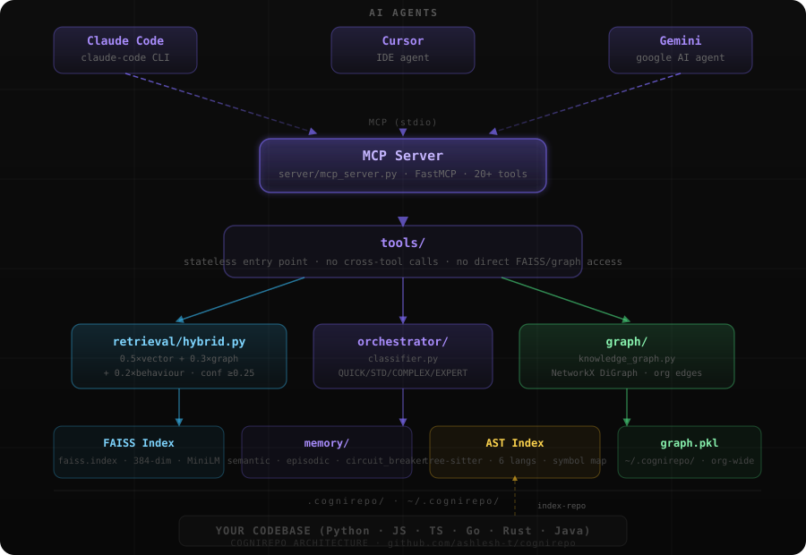

CogniRepo gives AI agents persistent semantic memory, a knowledge graph, AST indexing, and an MCP server — so they stop forgetting everything between sessions.
# One-command setup pip install cognirepo cognirepo setup # Index your codebase cognirepo index-repo . # Start the MCP server — works with Claude, Cursor, Gemini cognirepo prime
Every AI session starts cold. CogniRepo fixes that by building a cognitive layer between your codebase and your AI agents — memory that survives process restarts.
AST parser extracts symbols, call graphs, and doc strings across Python, JS, TS, Go, Rust, Java. Stored in a FAISS vector index + NetworkX knowledge graph.
cognirepo index-repo .
The MCP server exposes 20+ tools. Agents call context_pack() to get packed, token-efficient context instead of reading raw files.
context_pack("how does auth work?")
Decisions, errors, episode logs, and user preferences survive session boundaries. Next agent picks up exactly where the last one stopped.
get_last_context() → resume instantly
FAISS-powered vector store with all-MiniLM-L6-v2 embeddings. Similarity search across codebase symbols, docs, and episodic logs. Cold-start degrades gracefully to pure vector search.
NetworkX DiGraph tracks IMPORTS / CALLS_API / SHARES_SCHEMA / CHILD_OF edges across repos. Multi-repo org graph with cross-service traversal. AI agents add DISCOVERED edges dynamically.
Tree-sitter parses Python, JS, TS, Go, Rust, Java. Extracts functions, classes, symbols, and call relationships. lookup_symbol() finds any symbol across the whole repo in milliseconds.
FastMCP stdio transport exposes 20+ tools. Works with Claude Code, Cursor, Gemini — any agent that speaks Model Context Protocol. Stateless tools, composable at the caller level.
Timestamped log of decisions, errors, and milestones. episodic_search() lets agents recall past bugs and solutions. record_decision() writes architectural choices that survive forever.
Blends vector score (0.5) + graph score (0.3) + behaviour score (0.2). Confidence gate filters noise — code hits must score ≥0.25 or retrieval returns a structured failure, never README noise.
Tools are the single entry point. All retrieval goes through hybrid.py.
All storage lives under .cognirepo/. No surprises.

.cognirepo/
Replace public/assets/architecture.svg with a custom graphic anytime.
Agents retrieve only relevant, packed context instead of dumping entire files. context_pack() greedily fills a token budget — no wasted context window.
get_last_context() + get_session_brief() restore full session state in <1s. New agent picks up mid-thought from where the previous one stopped.
Snapshots at ~/.cognirepo/<repo>/last_context.json are shared across Claude, Gemini, and Cursor running on the same machine simultaneously.
org_wide_search() spans all registered repos in one query. Cross-service call graph traversal maps how microservices call each other — discovered dynamically by agents.
Circuit breaker in memory/circuit_breaker.py monitors RSS and opens before the process OOMs. Degrades gracefully to pure vector search when graph is unavailable.
AST reverse index maps every function, class, and symbol to its exact file:line. lookup_symbol("fn") is faster than any grep — no scanning, direct O(1) lookup.
One pip install. One cognirepo setup. Works with Claude Code, Cursor, and Gemini out of the box.